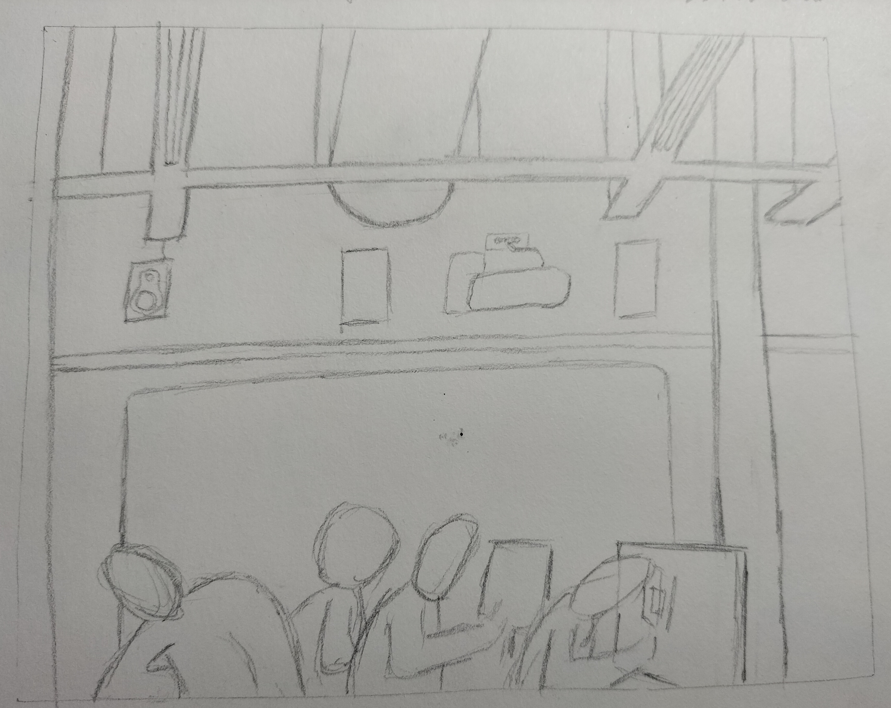

Dibuix inicial
Aquest dibuix va ser un dels primers que vam fer, en el que teniem una referencia, el cavall al reves i ho teniem que dibuixar igual, al acabar es podia veure el caball.

Dibuix sombres
Vam començar a tractar sombres, tant de taca com de trama, i ens van posar a devant un casc on teniem que fer les sombres segons la prespectiva nostra.

Dibuix ma
Treballant les sombres vam fer un exercici per escalfar, dibuixar la nostra ma, es a dir amb una ma dibuixar i l'altre per estar de model.

Dibuix interior 1
En aquest dibuix estavem treballant la visió espaial, i ens van demanar que busquessim una linea de referència que fos horitzontal.
Es un exercici d'escalfament
Dibuix interior 2
Seguint en la línea del dibuix anterior, treballem les formes en referència en angle
Es un exercici d'escalfament

Dibuix interior 3
Exercici definitiu treballant les profunditats i formes del passadís de clase

Dibuix exterior 1
Activitat d'sketchcrawl per vic, primera parada: Edifici La Farinera.

Dibuix element
Activitat on voliem potenciar les sombres i les proporcions.

Dibuix lliure 1
Sempre que volguem podem presentar dibuixos fets per a nosaltres de coses que ens agradin. En el meu cas una de les coses que més m'agrada dibuixar són interiors i mobles, per això vaig fer aquest dibuix d'una referencia de publicitat d'empreses de diseny d'interiors a instagram.